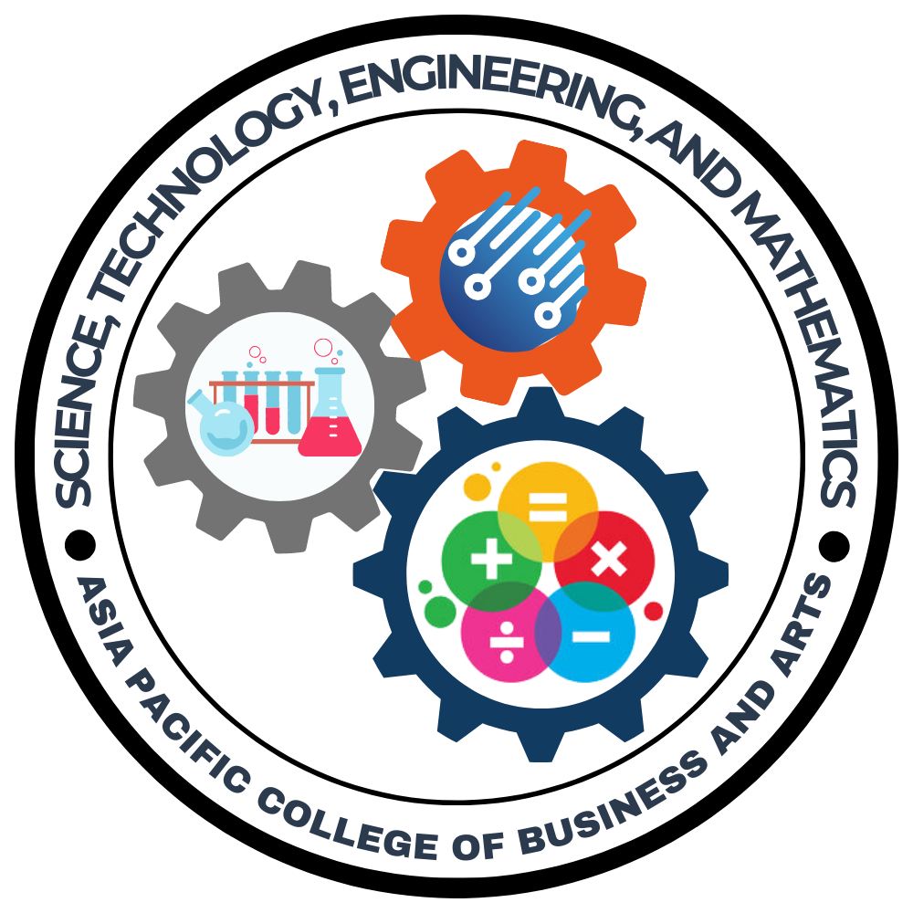
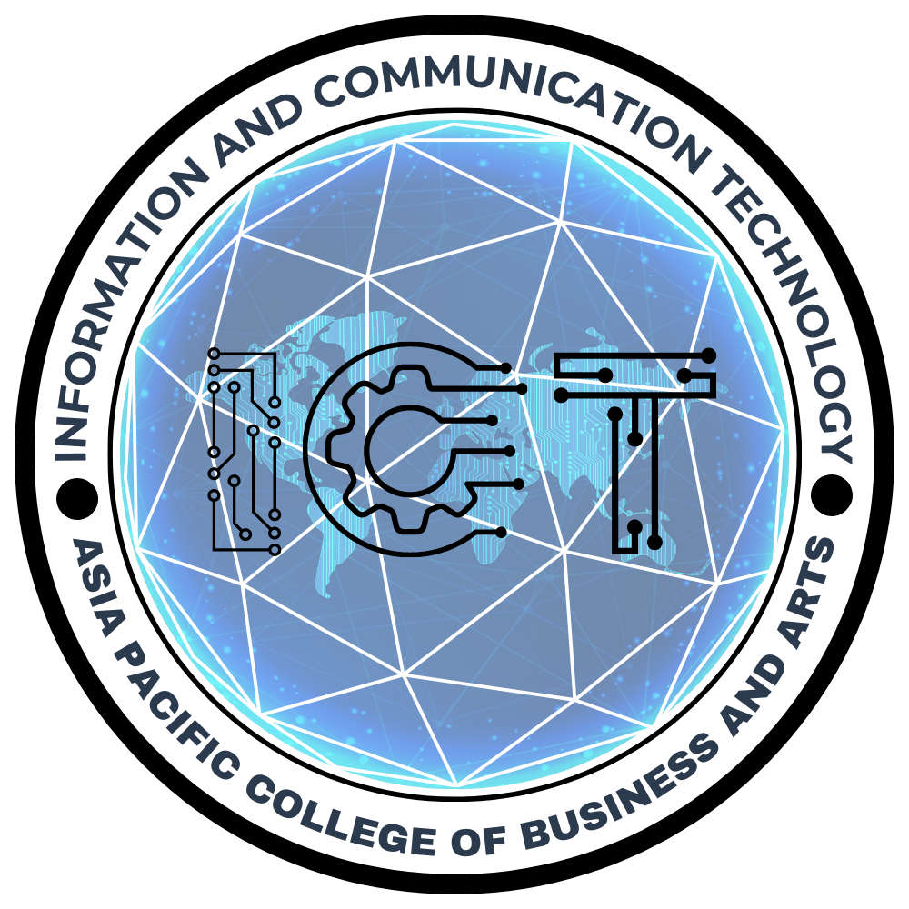
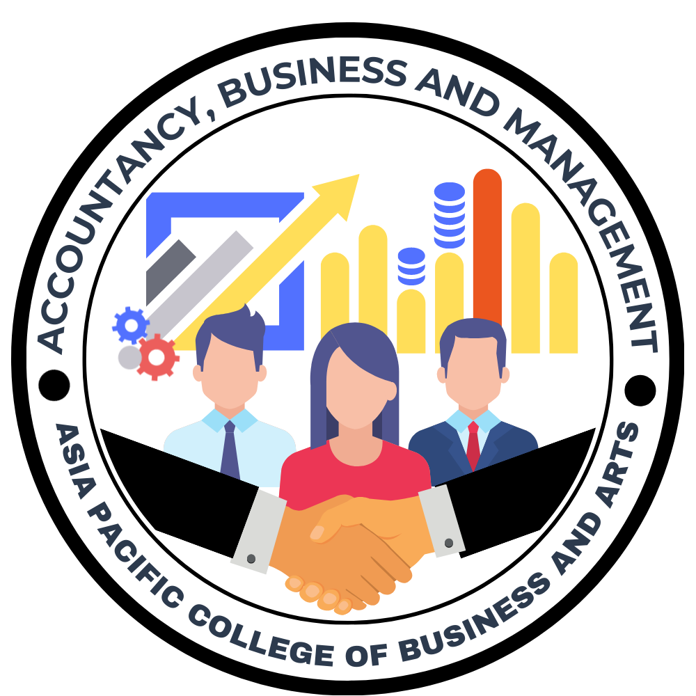
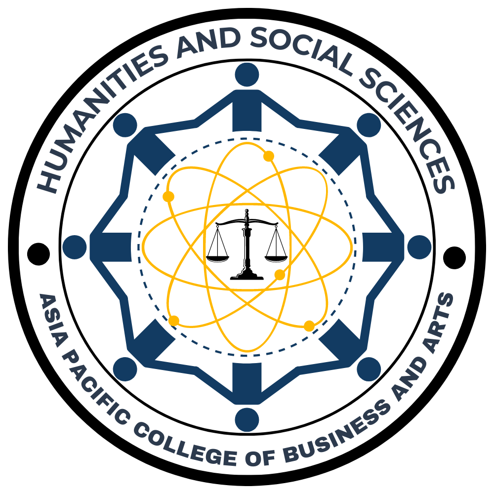
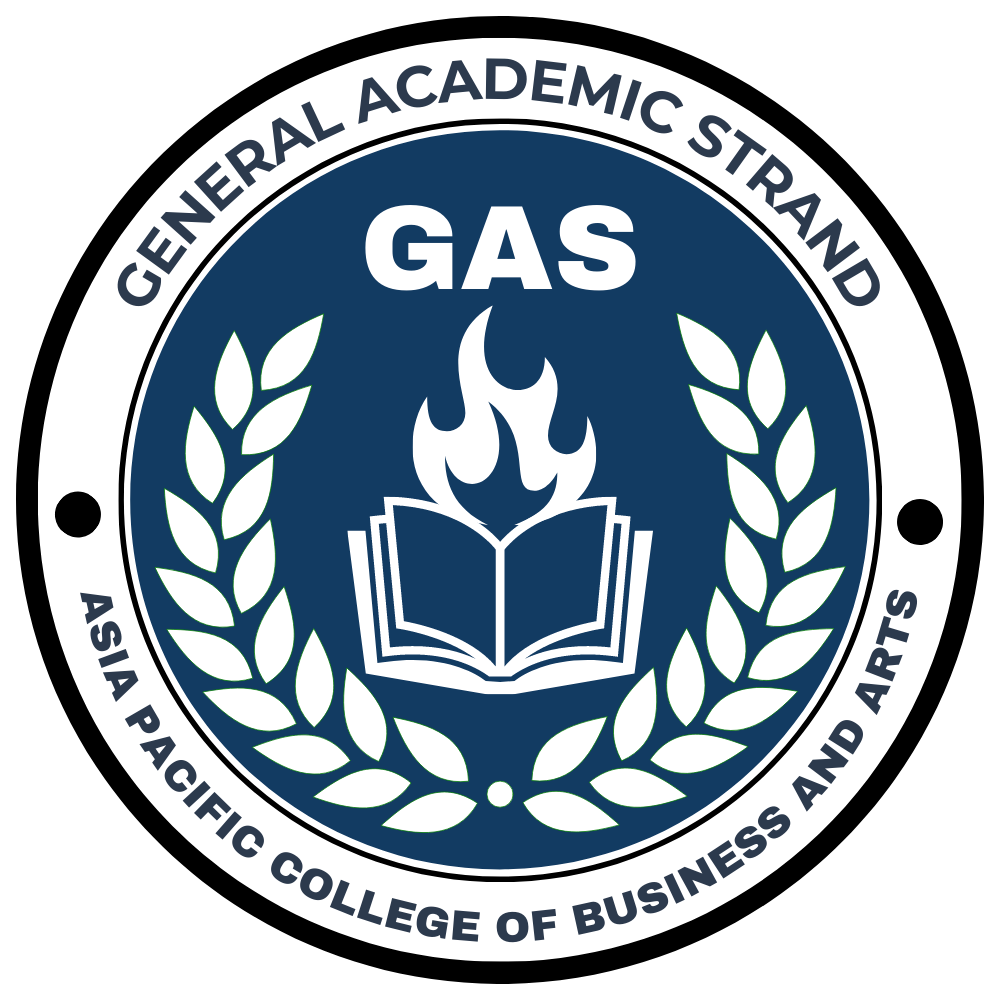
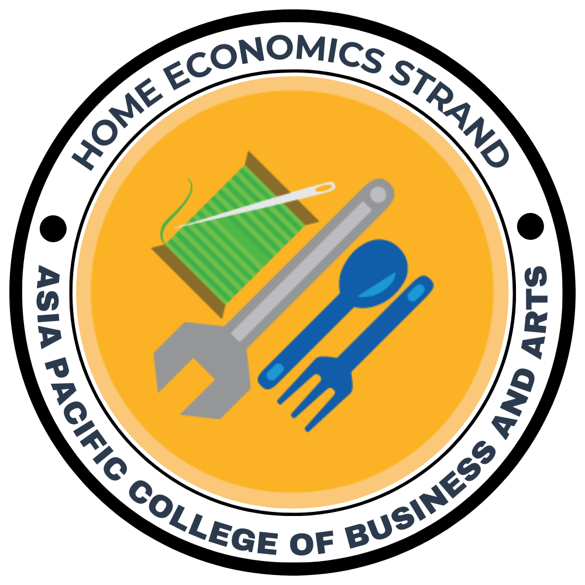
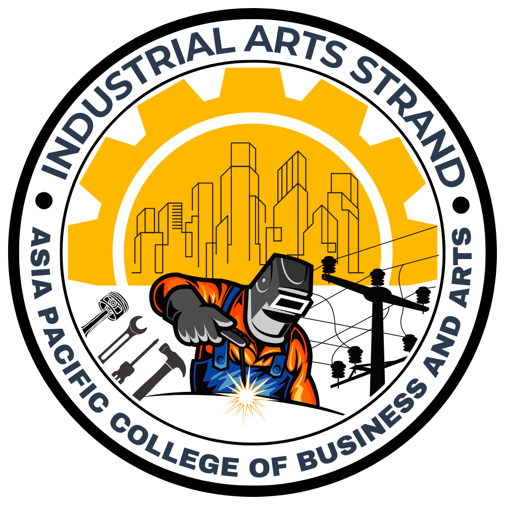
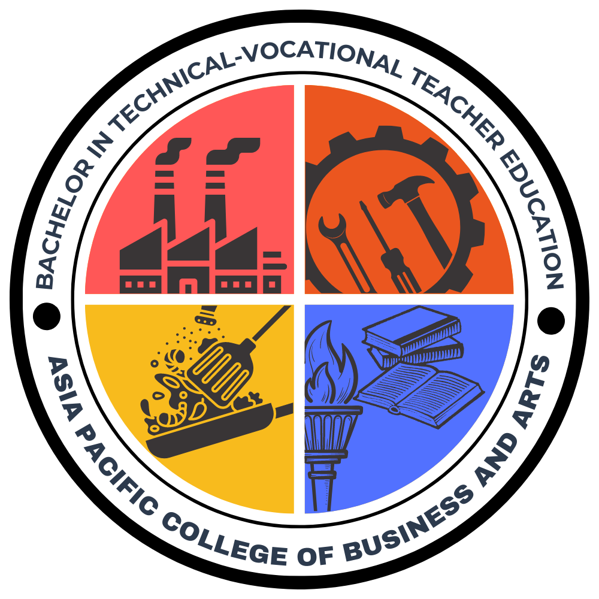
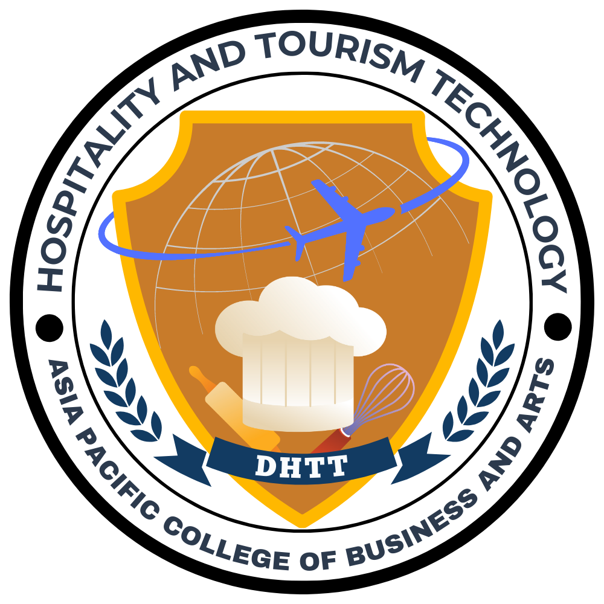

Asia Pacific College of Business and Arts
Ad majorem Dei gloriam.
404600
Ad majorem Dei gloriam.
404600
The STEM strand in SHS is an inquiry and research-based program. It exposes students to more complex mathematics and science concepts and aims to serve as a foundation for their future college degrees. Through various projects and research entailed, students develop problem-solving skills where they can apply scientific, technological, mathematical, and engineering concepts.
ICT students gain knowledge and skills needed to effectively apply, use and manage technology when solving problems specifically related to information and communication. Classes provide a human and organizational focus on technology–teaching students how to be effective users of technology.
The ABM (Accountancy, Business, and Management) Strand is designed for students who are interested in business, finance, entrepreneurship, and accounting. The curriculum of the ABM strand provides a strong foundation in the principles of business and management, as well as financial and accounting concepts.
Humanities and Social sciences deals with studying the diversity of human behaviours and interaction in social, cultural,environmental,economic and political contexts. In this strand you will encounter the future lawyer, teacher, police, politician, writer and etc.
The GAS strand is created to cater to students who prefer a broader range of studies rather than specific fields. It offers SHS students the flexibility to choose electives from various strands, which helps in choosing a university degree.
In this strand, students will be trained with livelihood skills that they can use for employment or in starting their own business. Bataan National High School-Senior High School offers Cookery, Dressmaking, Bread and Pastry and Food and Beverages under Home Economics.
The Industrial Arts strand helps students develop their technical skills. These skills are useful for industry jobs, including carpentry, automotive services, electronics, plumbing, welding, and many more. In fact, this strand aims to produce field experts skilled in various technical facets.
The (BTVTEd) is a four (4) year collegiate program under the Institute of Arts, Sciences and Teacher Education. It is a program for individuals intending to advance a career in (TLE) to Junior High School, Senior High School and (TVET) students. The program equips learners with adequate and relevant competencies in teaching specific areas in (IA) or (HE), (ICT) and Agri-Fishery Arts (the four areas of technical and vocational track of the Senior High School Program) as mandated by the (CHED).
The Tourism, Hotel and Restaurant Technology program will equip students with competencies that are needed to execute operational tasks and management functions in food production (culinary), accommodation, food and beverage service, tourism planning and product development, events planning, travel and tour operations and other emerging sectors of hospitality and tourism industry.
